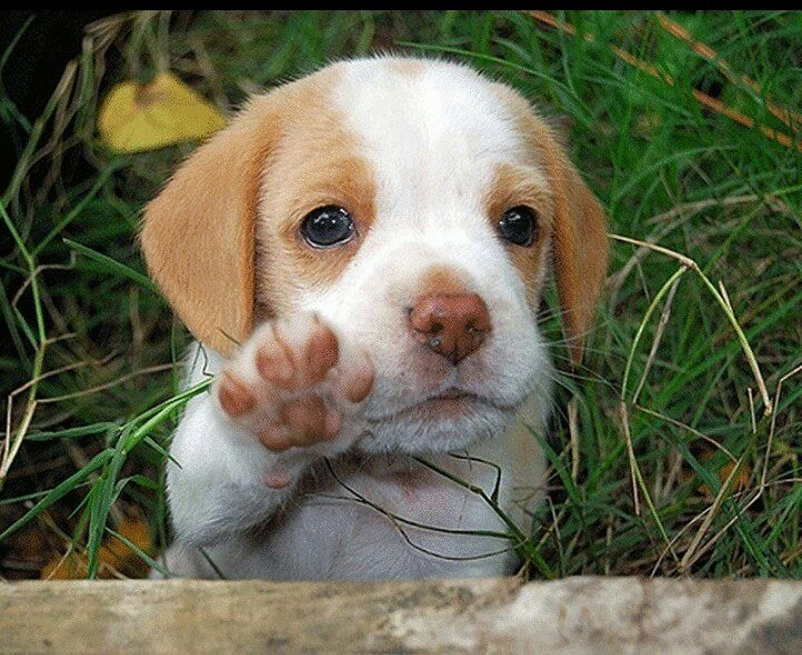

Pagina de Perritos
Imagenes de Perritos


Si quieres ver más imagenes de perritos, da click aquí.
Listas de perritos
3 Cosas que los perritos aman
- Acariciarlos
- Jugar
- Comer sobres
3 Cosas que los perritos odian
- Que les griten
- Estar afuera
- Animales extraños